EcoLact / Guía de desarrollo
Configuración de MySQL
MySQL conserva los registros centrales utilizados por Laravel. Preparar una base local identificable permite aplicar la estructura versionada y revisar los catálogos sin intervenir sobre información operativa real.
Paso 1. Preparar el servicio
Inicia MySQL mediante el gestor de tu instalación y abre un cliente como MySQL Workbench. Comprueba el servidor, puerto y usuario que vas a utilizar. PHP necesita pdo_mysql para establecer la conexión; el cliente gráfico por sí solo no demuestra que PHP pueda conectarse. No se fija una versión de MySQL que el repositorio no declara.
Paso 2. Crear la base de desarrollo
La plantilla .env.example conserva DB_DATABASE=ecolactv1. Ejecuta el siguiente SQL en tu servidor local de desarrollo, con una cuenta autorizada. Si ese nombre ya contiene datos, utiliza otra base y actualiza DB_DATABASE.
CREATE DATABASE IF NOT EXISTS ecolactv1
CHARACTER SET utf8mb4
COLLATE utf8mb4_unicode_ci;
Qué hace: Crea el esquema si no existe; no crea un usuario ni concede permisos. Charset y collation coinciden con los valores predeterminados de la conexión MySQL del proyecto.
Resultado esperado: Existe el esquema destinado a esta copia.
Comprobación: Selecciona el esquema en el cliente. IF NOT EXISTS no valida que una base existente esté vacía ni que corresponda a desarrollo.
Paso 3. Configurar Laravel
En EcoLactWeb/.env establece estos valores como plantilla; usuario_local y valor_privado son marcadores, no credenciales funcionales.
DB_CONNECTION=mysql
DB_HOST=127.0.0.1
DB_PORT=3306
DB_DATABASE=ecolactv1
DB_USERNAME=usuario_local
DB_PASSWORD=valor_privado
Qué hace: Selecciona MySQL y localiza la base y la cuenta con acceso. config/database.php puede usar SQLite si no se declara DB_CONNECTION; esta guía elige MySQL explícitamente.
Resultado esperado: La aplicación tiene la conexión del entorno correcto.
Comprobación: Comprueba la correspondencia con el cliente MySQL y ejecuta php artisan config:clear desde EcoLactWeb.


Paso 4. Aplicar la estructura
Las migraciones son la referencia versionada para construir y evolucionar las tablas. Revisa el entorno antes de ejecutar.
php artisan migrate
php artisan migrate:status
Qué hace: migrate aplica archivos pendientes de database/migrations; status muestra cuáles quedaron ejecutados.
Resultado esperado: El esquema contiene las tablas previstas por esta revisión.
Comprobación: Revisa el estado de todas las migraciones y el listado de tablas. Hay archivos que agregan columnas, índices o transforman estructuras: no importes además un SQL histórico como segundo procedimiento normal.
Paso 5. Cargar los seeders
Define primero ECOLACT_ADMIN_USERNAME y ECOLACT_ADMIN_PASSWORD con datos propios. Revisa los siete seeders que llama DatabaseSeeder.
php artisan db:seed
Qué hace: Inserta o actualiza los datos iniciales según cada implementación; no crea una demostración completa de todos los módulos.
Resultado esperado: Roles, administrador, parámetros, precio inicial, reglas de pago y zonas quedan disponibles.
Comprobación: Consulta los catálogos y verifica el acceso inicial. Las delimitaciones referenciales deben revisarse por el administrador.
Qué crea o modifica cada seeder
| Seeder | Comportamiento observado |
|---|---|
| RoleSeeder | Seis roles. updateOrInsert actualiza indicadores de remuneración y control de asistencia. |
| AdminUserSeeder | Crea o actualiza el usuario de ECOLACT_ADMIN_USERNAME; vuelve a escribir el hash de la contraseña, lo activa y exige cambio de contraseña. |
| ParametroCalidadSeeder | Siete parámetros: densidad, grasa, proteína, lactosa, pH, agua añadida y temperatura. Actualiza su descripción, unidad y estado. |
| PrecioLecheSeeder | Precio inicial de 1.70 por litro, vigente desde 2020-01-01, asociado al administrador configurado. Si no lo encuentra, no lo crea. |
| ReglaPagoCalidadSeeder | Reglas monetarias para ACEPTADA, OBSERVADA y RECHAZADA. La regla observada tiene ajuste -0.10. |
| ZonaSeeder | Collana 1, Collana 2, Faon y Yasin. Evita duplicar nombres equivalentes y completa colores faltantes. |
| ZonaDelimitacionSeeder | Añade polígonos operativos referenciales alrededor de Huata solo si falta geometría. No son límites oficiales; conserva delimitaciones editadas. |
No confundir repetibilidad con ausencia de cambios. Varios seeders usan updateOrInsert: repetirlos puede sobrescribir valores editados y restablecer la contraseña del administrador. Las delimitaciones iniciales requieren validación operativa.
Paso 6. Verificar la conexión y estructura
En el cliente MySQL, abre la misma base que configuraste en Laravel.
USE ecolactv1;
SELECT DATABASE();
SHOW TABLES;
SELECT nombre FROM roles;
SELECT nombre FROM zonas;
Qué hace: Las consultas identifican el esquema, enumeran las tablas y revisan catálogos sin mostrar datos personales.
Resultado esperado: Aparecen las tablas migradas y los roles y zonas sembrados.
Comprobación: Compara con php artisan migrate:status: el cliente MySQL y Artisan deben observar la misma base. No basta con que Workbench conecte a otro servidor.
migrate:fresh --seed elimina las tablas existentes y vuelve a crear y sembrar la base. No forma parte del procedimiento normal. Solo tiene sentido en un entorno de pruebas desechable cuya pérdida de datos se haya aceptado.
Base de desarrollo

Archivo: mysql-base-datos.png
Qué debe mostrar: El esquema ecolactv1 y su listado de tablas, sin registros personales.
Herramienta: MySQL Workbench o cliente MySQL.
Estado de las migraciones

Archivo: mysql-migraciones.png
Qué debe mostrar: La finalización de migrate y el listado migrate:status.
Herramienta: PowerShell.
Fuentes verificables del repositorio
- EcoLactWeb/.env.example
- EcoLactWeb/config/database.php
- EcoLactWeb/database/migrations
- EcoLactWeb/database/seeders/DatabaseSeeder.php
- EcoLactWeb/database/seeders/RoleSeeder.php
- EcoLactWeb/database/seeders/AdminUserSeeder.php
- EcoLactWeb/database/seeders/ParametroCalidadSeeder.php
- EcoLactWeb/database/seeders/PrecioLecheSeeder.php
- EcoLactWeb/database/seeders/ReglaPagoCalidadSeeder.php
- EcoLactWeb/database/seeders/ZonaSeeder.php
- EcoLactWeb/database/seeders/ZonaDelimitacionSeeder.php
Revisión de referencia: 75901337489d. Los procedimientos se contrastaron con estas fuentes; los comandos de instalación, migración y compilación del producto no se ejecutaron para elaborar esta guía.